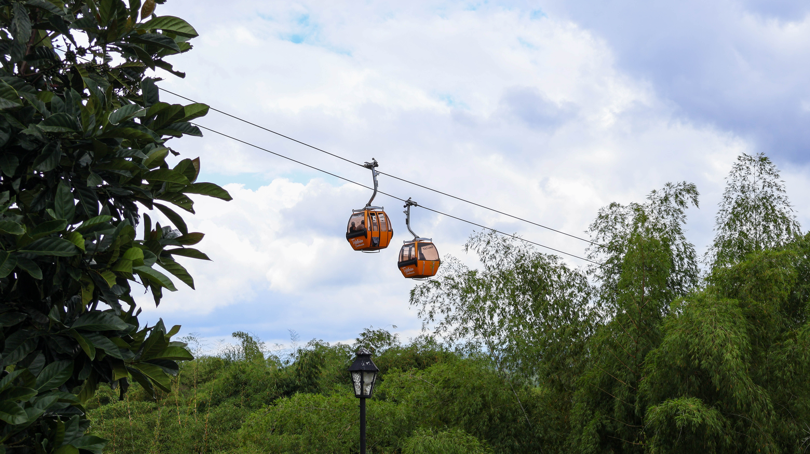
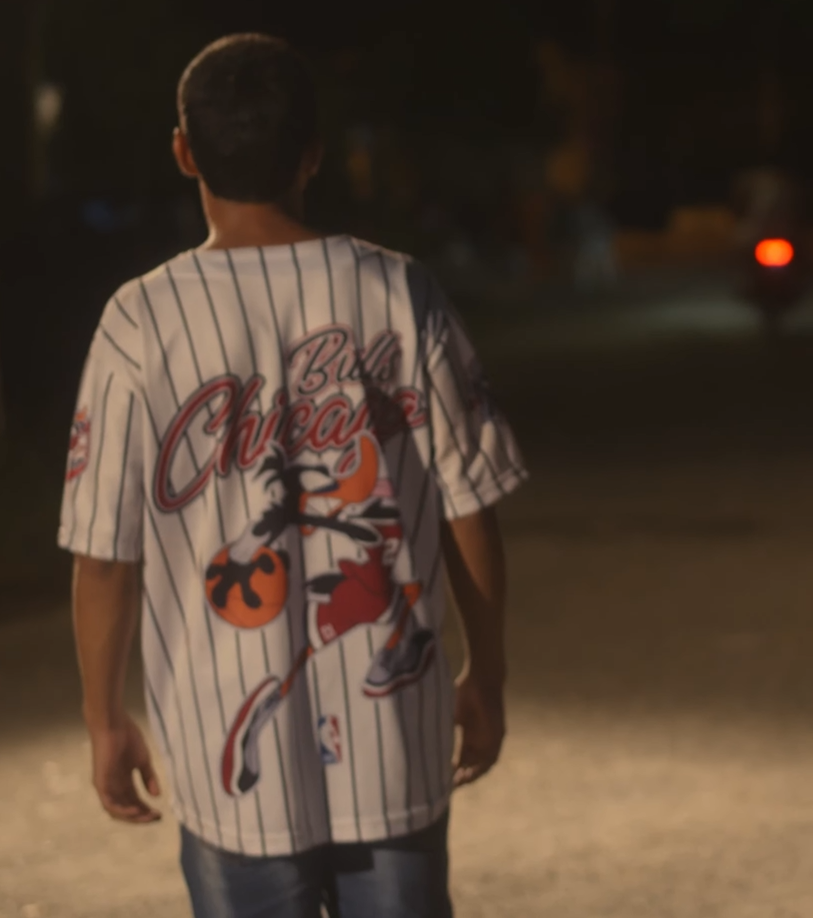
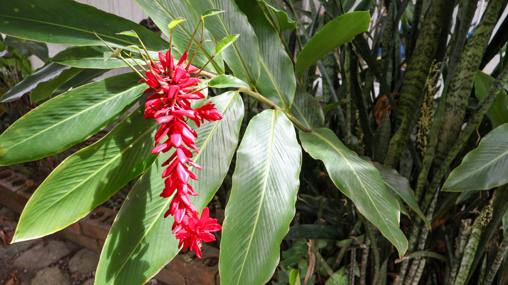
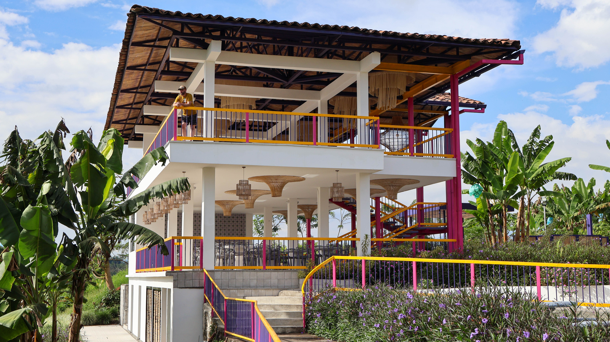

Imagen, narrativa y movimiento.
Cada cuadro cuenta una historia.
Cuatro disciplinas, una sola visión: contar historias con honestidad visual.

Producciones audiovisuales
Ver colección →
Sesiones de retrato fotográfico
Ver en Behance →
Paisajes y naturaleza
Ver en Behance →
Espacios y edificaciones
Ver en Behance →Con formación en comunicación social audiovisual, Harold trabaja en la intersección entre el periodismo visual, la fotografía documental y la producción de video. Su trabajo abarca desde retratos íntimos hasta paisajes de Colombia.
Ver servicios →